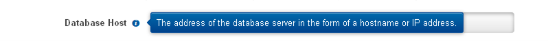
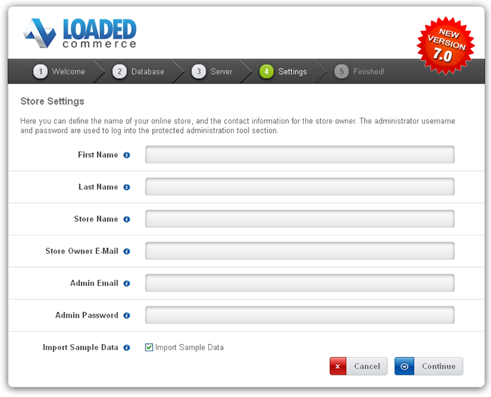
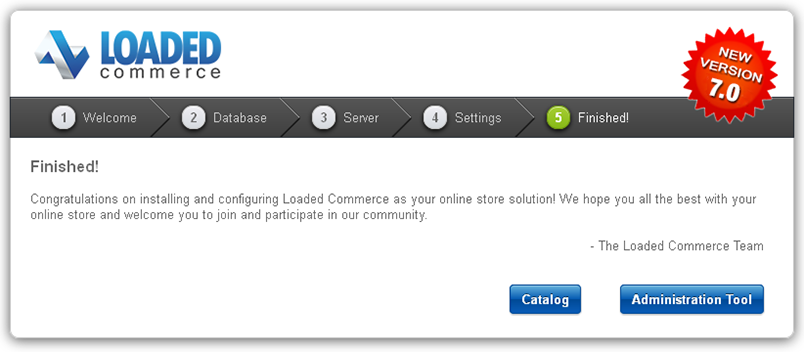
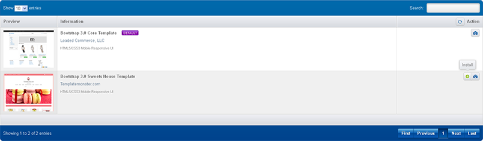
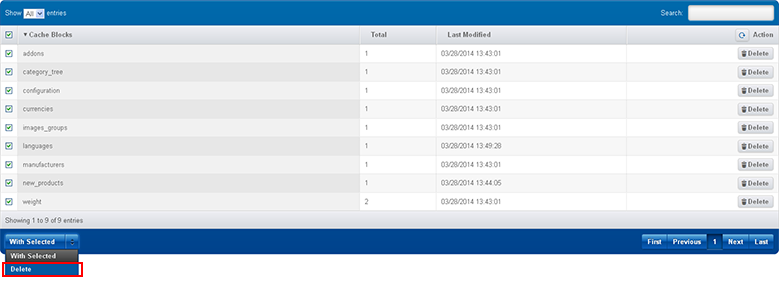

Подготовка
Для хранения информации движок Loaded 7 использует базу данных MySQL. Перед началом установки Loaded 7 убедитесь в наличии пустой базы данных MySQL. Ее можно создать в контрольной панели хостинга при помощи инструмента phpMyAdmin.
Детальная информация находится в туториале Как создать базу данных MySQL. В случае возникновения сложностей на данном этапе рекомендуется обращаться к хостинг провайдеру.
При создании базы данных MySQL необходимо указать название базы данных, имя пользователя, пароль и запомнить адрес сервера базы данных. Сохраните данную информацию, поскольку она понадобится при установке Loaded 7.
Установка движка Loaded 7
1. Требования к серверу
Убедитесь, что ваш хостинг сервер соответствует системным требованиям Loaded 7:
Операционная система Linux
Веб-сервер Apache версии 1.3 или выше, с расширением mod_ssl.
База данных MySQL версии 4.1.13+ или 5.0.7+
PHP 5.3+ (с расширением MySQLi)
- Настройки PHP:
- - Активные настройки PHP
- FILE_UPLOADS
- - Деактивированные настройки PHP
- REGISER_GLOBALS
- MAGIC_QUOTES
- SESSION.AUTO_START
- SESSION.USE_TRANS_SID
- - POST_MAS_SIZE: 10M
- - UPLOAD_MAX_FILESIZE: 10M
- - Активные настройки PHP
- Расширения PHP – РЕКОМЕНДУЕМЫЕ
- - mySQLi
- - GD
- - CURL
- - OPENSSL
- - Phar
- Настройки PHP:
Работа движка на PHP-сервере с PHP скомпилированным с Suhosin/Hardened не тестировалась.
suPHP функционирует на сервере таким же образом, как и PHP.
Внимание: ionCube Loader (версии 4.4.1 или выше) является рекомендуемым компонентом для функциональности платных аддонов, например Pro и версии B2B Loaded 7, и некоторых нативных/альтернативных дополнений.
2. Скачивание
Для установки Loaded 7 необходимо скачать движок с официального сайта www.loadedcommerce.com/home/download/
Укажите имя и e-mail в отведенных полях и нажмите кнопку 'Get Free Download' (Скачать бесплатно).
Убедитесь, что загружаете версию Loaded 7 совместимую с выбранным вами шаблоном. Все версии Loaded 7 доступны на сайте GitHub.
3. Извлечение файлов
После загрузки Loaded 7 вам потребуется извлечь файлы и папки из архива.
Это можно сделать при помощи программ WinZip (PC), StuffitExpander (MAC) и т.п.
При необходимости ознакомьтесь со следующими инструкциями по распаковыванию файлов из архивов: WinZip (PC) и StuffitExpander (MAC).
Внимание: если в панели управления хостинга доступна функция 'Распаковать', можно загрузить на сервер сам файл .zip и разархивировать его там.
4. Загрузка файлов движка Loaded 7
Если вы распаковали файлы локально на компьютере, их необходимо загрузить на хостинг сервер.
Это можно сделать при помощи Файлового менеджера в контрольной панели хостинга или через FTP-менеджеры, например FileZilla, TotalCommander, CureFTP и т.п.
Руководства по загрузке файлов можно найти в туториалах Как загрузить файлы на сервер или Как загрузить файлы при помощи cPanel (WebHost менеджер, WHM).
Содержимое скачанного архива нужно скопировать на хостинг сервер. Структура папок после копирования должна выглядеть так:
/home/user/public_html/
/srv/www/htdocs/
/usr/local/htdocs/
/var/www/vhosts/domain.com/httpdocs/
Распакованный архив содержит следующие файлы и папки:
loadedcommerce/
readme.txt
license.txt
5. Права на файлы и папки Loaded 7
Прежде всего, переименуйте файл конфигурации 'includes/config_dist.php' в 'includes/config.php'
Следующие файлы и папки должны быть доступны для записи:
| Файлы | Записываемые |
|---|---|
| includes/config.php | Да |
| Папки | Записываемые |
|---|---|
| admin/images/graphs | Да |
| images/banners | Да |
| images/categories | Да |
| images/manufacturers | Да |
| images/products | Да |
| includes/work | Да |
6. Установка движка Loaded 7
Когда все нужные файлы будут загружены на сервер, можно приступать к установке движка Loaded 7. Запустите браузер, в адресной строке пропишите доменное имя и путь к папке Loaded 7 'domain_name/path_to_loaded7_directory/install' и перейдите на эту страницу. Должна появиться страница приветствия. Следуйте инструкциям на ней при установке Loaded 7.
Шаг 1: Приветствие
Выберите метод установки 'Upgrade from 6.x Version' (если вы используете более старую версию) или 'New Install' (для новой установки)

В нашем случае мы выполняем новую установку 'New Install'
Шаг 2: База данных
Введите детали сервера базы данных
| Настройка | Описание | Пример значения |
|---|---|---|
| Адрес сервера | Адрес сервера базы данных в виде названия хоста или IP-адреса. | localhost |
| Имя пользователя | Имя пользователя, используемое для входа на сервер базы данных. | user |
| Пароль | Пароль пользователя для подключения к базе данных. | p@ssw0rd |
| Название базы данных | Название базы данных для хранения информации. | loadedcommerce |
| Тип базы данных | Используемое программное обеспечение сервера базы данных. | MySQL |
| Префикс таблиц | Префикс для таблиц базы данных. | lc_ |

Для получения подсказки наведите курсором мыши на информационную иконку возле названия поля
Заполните требуемые поля и нажмите кнопку 'Continue' (Продолжить)
Шаг 3: Веб-сервер

Убедитесь, что на все необходимые директории установлены права записи
После проверки нажмите кнопку 'Continue'(Продолжить)
Шаг 4: Настройки
Введите данные владельца магазина и администратора сайта.
Внимание! Запомните имя пользователя и пароль администратора, так как они необходимы для управления магазином.

После заполнения полей нажмите кнопку 'Continue' (Продолжить)
Шаг 5: Завершено!
Если файл конфигурации недоступен для записи, его можно вручную изменить через FTP.
С целью повышения безопасности сайта, рекомендуется удалить папку /install/ с хостинг сервера.
При возникновении дополнительных вопросов, можно воспользоваться официальной инструкцией Loaded 7.
Установка шаблона Loaded 7
Установка шаблона без демо данных
1. Подготовка шаблона.
Перед тем, как продолжить, убедитесь, что вы уже скачали и распаковали архив с шаблоном. При необходимости ознакомьтесь со следующими инструкциями по распаковыванию файлов из архивов: WinZip и StuffitExpander.
После распаковки файлов можно приступать к загрузке шаблона.
2. Установка.
1. Скопируйте содержимое папки theme (/admin и /templates) в корневую директорию движка Loaded 7 на сервере.
Руководства по загрузке файлов можно найти в туториалах Как загрузить файлы на сервер через FTP и Как загрузить файлы при помощи cPanel.
2. Зайдите в админ панель магазина.
3. Откройте меню Settings (Настройки) -> Setup (Установка) -> Templates (Шаблоны), выберите требуемый шаблон и щелкните по кнопке '+'.

4. После установки шаблона нажмите кнопку 'Edit' (Редактировать).

5. Выберите 'Set us default' (Установить по умолчанию) и нажмите кнопку 'Save' (Сохранить).
6. Перейдите в меню Settings (Настройки) -> System Tools (Инструменты) -> Cache Control (Контроль кэша), в выпадающем списке выберите 'All' (Все).

7. После чего выберите 'Cache Blocks' (Кэш блоков) и в выпадающем списке 'With Selected' (Выделенные) нажмите 'Delete' (Удалить)

3. Расположение блоков
Для того чтобы шаблон выглядел как на демо, необходимо расположить используемые блоки темы в позиции согласно разделу документации 'Конфигурация шаблона'.
Чтобы выставить блок в позицию, следуйте следующей инструкции
1. Проследуйте в меню Settings (Настройки) -> Setup (Установка) -> Templates Modules Layout (Расположение Модулей Шаблонов) -> Boxes (Блоки) или Content (Содержание).
- Убедитесь, что вы редактируете позиции требуемого шаблона

2. Чтобы установить модуль в позицию, нажмите кнопку 'Add Template Module' (Добавить модуль шаблона)

3. В появившемся окне настройте необходимый модуль согласно инструкциям и нажмите кнопку 'Save' (Сохранить).

4. Повторите данную процедуру для всех требуемых блоков.
Установка шаблона с демо данными
После установки демонстрационных данных, электронный магазин на основе движка Loaded 7 будет выглядеть полностью как на демо. Он будет содержать примеры товаров, настройки магазина, модулей и т.д.
Не устанавливайте демонстрационные данные на работающий сайт! Они заменят все товары в магазине и перезапишут любые настройки.
Перед тем, как продолжать, убедитесь, что вы уже скачали и распаковали архив шаблона. При необходимости ознакомьтесь со следующими инструкциями по распаковыванию файлов из архивов: WinZip и StuffitExpander.
После распаковки файлов можно приступать к установке шаблона.
1. Скопируйте содержимое папки theme(+sample data)(/admin, /templates и /images) в корневую папку движка Loaded 7 на сервере.
Руководства по загрузке файлов можно найти в туториалах Как загрузить файлы на сервер по FTP и Как загрузить файлы с помощью cPanel.
2. Установка демонстрационных данных.
-
Демонстрационные данные хранятся в виде файла .SQL. Он находится в папке theme(+sample data) шаблона под названием dump.sql
Файл dump.sql может быть установлен через инструмент phpMyAdmin или панель для работы с базами данных контрольной панели сервера. Вы можете воспользоваться инструкцией Как импортировать дамп SQL.
-
Перед тем, как продолжать, рекомендуется сделать резервную копию базы данных, воспользовавшись подробной инструкцией как создать резервную копию базы данных.
Убедитесь, что установленная версия Loaded 7 соответствует требованиям шаблона. В противном случае база данных будет повреждена.
После окончания импорта файла dump.sql магазин должен выглядеть так же, как на демо.